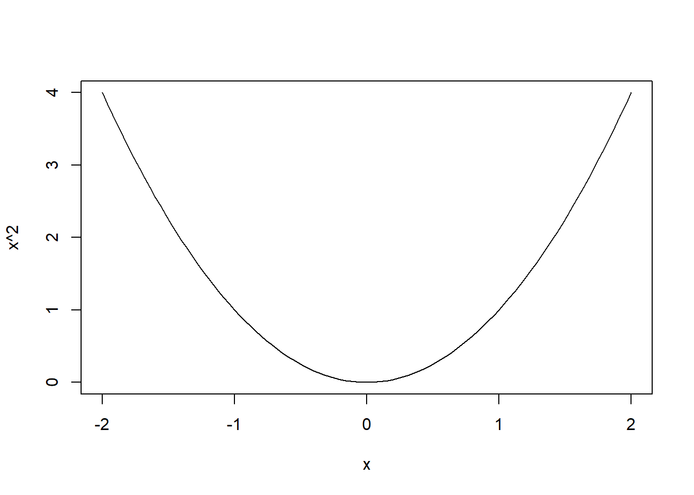
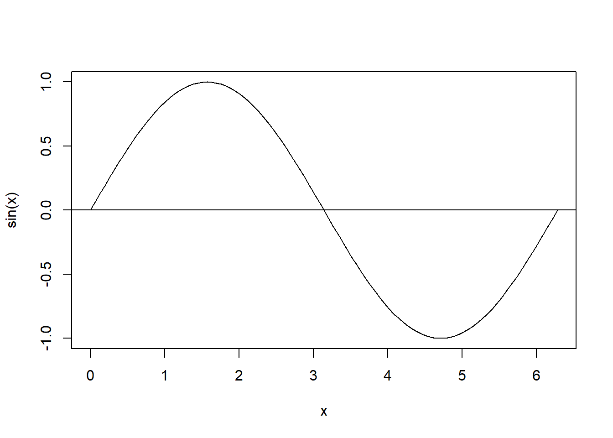
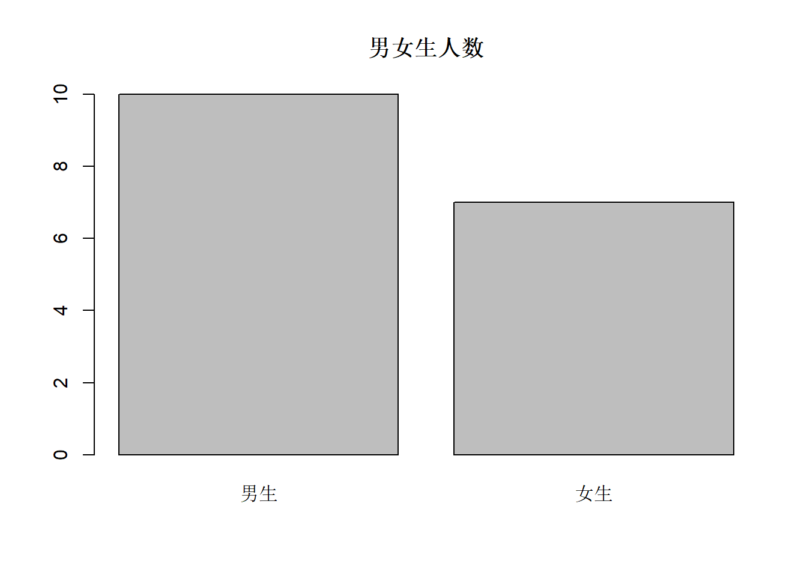
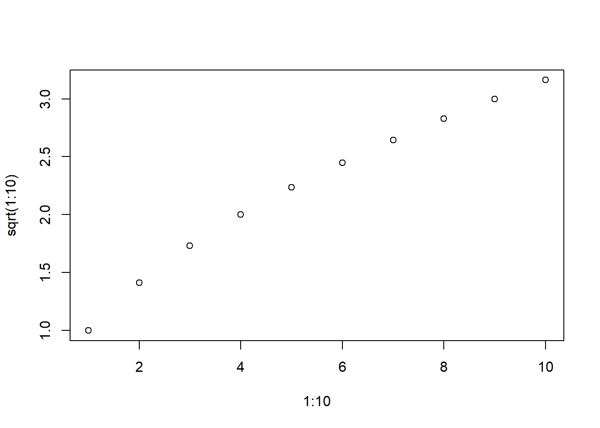

2 R语言入门运行样例
2.1 命令行界面
启动R软件后进入命令行界面，每输入一行命令，就在后面显示计算结果。 可以用向上和向下箭头访问历史命令； 可以从已经运行过的命令中用鼠标拖选加亮后， 用Ctrl+C复制后用Ctrl+V粘贴， 或用Ctrl+X一步完成复制粘贴， 粘贴的目标都是当前命令行。
如果使用RStudio软件， 有一个“Console窗格”相当于命令行界面。 在RStudio中， 可以用New File–Script file功能建立一个源程序文件（脚本文件）， 在脚本文件中写程序， 然后用Run图标或者Ctrl+Enter键运行当前行或者选定的部分。
2.2 四则运算
四则运算如:
结果为1238.418, 前面显示的结果在行首加了井号，
这在R语言中表示注释。
本教程的输出前面一般都加了井号以区分于程序语句。
输出前面的方括号和序号1是在输出有多个值时提供的提示性序号，
只有单个值时为了统一起见也显示出来了。
这里1.23E3是科学记数法，
表示\(1.23\times 10^3\)。
用星号*表示乘法，用正斜杠/表示除法。
用^表示乘方运算，如
重要提示：关闭中文输入法，否则输入一些中文标点将导致程序错误。
2.2.1 计算例子
从52张扑克牌中任取3张， 有多少种不同的组合可能？ 解答：有 \[ C_{52}^3 = \frac{52!}{3! (52-3)!} = \frac{52 \times 51 \times 50}{3\times 2 \times 1} \] 种， 在R中计算如:
2.2.2 练习
某人存入10000元1年期定期存款，年利率3%, 约定到期自动转存（包括利息）。问：
10年后本息共多少元？
需要存多少年这10000元才能增值到20000元？
成语说：“智者千虑，必有一失；愚者千虑，必有一得”。 设智者作判断的准确率为\(p_1 = 0.99\), 愚者作判断的准确率为\(p_2=0.01\)， 计算智者做1000次独立的判断至少犯一次错误的概率， 与愚者做1000次独立判断至少对一次的概率。
2.3 数学函数
2.3.1 数学函数——平方根、指数、对数
例:
sqrt(6.25)表示\(\sqrt{6.25}\)，结果为2.5。
exp(1)表示\(e^1\)，结果为\(e=2.718282\)。
log10(10000)表示\(\lg 10000\)，结果为\(4\)。
log为自然对数。
2.3.2 数学函数——取整
例:
round(1.1234, 2)
## [1] 1.12
round(-1.9876, 2)
## [1] -1.99
floor(1.1234)
## [1] 1
floor(-1.1234)
## [1] -2
ceiling(1.1234)
## [1] 2
ceiling(-1.1234)
## [1] -1round(1.1234, 2)表示把1.1234四舍五入到两位小数。
floor(1.1234)表示把1.1234向下取整，结果为1。
ceiling(1.1234)表示把1.1234向上取整，结果为2。
2.3.3 数学函数——三角函数
例:
pi
## [1] 3.141593
sin(pi/6)
## [1] 0.5
cos(pi/6)
## [1] 0.8660254
sqrt(3)/2
## [1] 0.8660254
tan(pi/6)
## [1] 0.5773503pi表示圆周率\(\pi\)。sin正弦,
cos余弦,
tan正切,
自变量以弧度为单位。
pi/6是\(30^\circ\)。
2.3.4 数学函数——反三角函数
例:
pi/6
## [1] 0.5235988
asin(0.5)
## [1] 0.5235988
acos(sqrt(3)/2)
## [1] 0.5235988
atan(sqrt(3)/3)
## [1] 0.5235988asin反正弦,
acos反余弦,
atan反正切，
结果以弧度为单位。
2.3.5 分布函数和分位数函数
例:
dnorm(x)表示标准正态分布密度
\(\phi(x) = \frac{1}{\sqrt{2\pi}} e^{-\frac12 x^2}\).
pnorm(x)表示标准正态分布函数\(\Phi(x) = \int_{-\infty}^x \phi(t) \,dt\)。
qnorm(y)表示标准正态分布分位数函数
\(\Phi^{-1}(x)\)。
还有其它许多分布的密度函数、分布函数和分位数函数。
例如，
求自由度为10的t检验的双侧临界值。
其中qt(y,df)表示自由度为df的t分布的分位数函数。
2.4 输出
2.4.1 简单输出
命令行的计算结果直接显示在命令的后面。
在用source()运行程序文件时，
需要用print()函数显示一个表达式的结果，如：
用cat()函数显示多项内容，
包括数值和文本，
文本包在两个单撇号或两个双撇号中，如:
cat()函数最后一项一般是"\n", 表示换行。
忽略此项将不换行。
再次提示：要避免打开中文输入法导致误使用中文标点。
2.4.2 用sink()函数作运行记录
R使用经常是在命令行逐行输入命令（程序），
结果紧接着显示在命令后面。
如何保存这些命令和显示结果？
在R命令行中运行过的命令会被保存在运行的工作文件夹中的一个名为.Rhistory的文件中。
用sink()函数打开一个文本文件开始记录文本型输出结果。
结束记录时用空的sink()即可关闭文件不再记录。
如
sink("tmpres01.txt", split=TRUE)
print(sin(pi/6))
print(cos(pi/6))
cat("t(10)的双侧0.05分位数（临界值）=", qt(1 - 0.05/2, 10), "\n")
sink()sink()用作输出记录主要是在测试运行中使用，
正常的输出应该使用cat()函数、write.table()、write.csv()等函数。
2.4.3 练习
用
cat()函数显示log10(2)=*** log10(5)=***其中
***应该代以实际函数值。用
sink()函数开始把运行过程记录到文件“log001.txt”中，在命令行试验几个命令，然后关闭运行记录，查看生成的“log001.txt”的内容。
2.5 向量计算与变量赋值
R语言以向量为最小单位。用<-赋值。如
一般的向量可以用c()生成，
如
在程序语言中，变量用来保存输入的值或计算的结果。 变量可以存放各种不同类型的值， 如单个数值、多个数值（称为向量）、单个字符串、多个字符串（称为字符型向量），等等。 单个数值称为标量。
技术秘诀：用程序设计语言的术语描述， R语言是动态类型的， 其变量的类型不需要预先声明， 运行过程中允许变量类型改变， 实际上变量赋值是一种“绑定”（binding）， 将一个变量的名称（变量名）与实际的一个存储位置联系在一起。 在命令行定义的变量称为全局变量。
用print()函数显示向量或在命令行中显示向量时，
每行显示的行首会有方括号和数字序号，
代表该行显示的第一个向量元素的下标。如
12345678901:12345678920
## [1] 12345678901 12345678902 12345678903 12345678904 12345678905
## [6] 12345678906 12345678907 12345678908 12345678909 12345678910
## [11] 12345678911 12345678912 12345678913 12345678914 12345678915
## [16] 12345678916 12345678917 12345678918 12345678919 12345678920向量可以和一个标量作四则运算， 结果是每个元素都和这个标量作四则运算，如：
x1 + 200
## [1] 201 202 203 204 205 206 207 208 209 210
2*x1
## [1] 2 4 6 8 10 12 14 16 18 20
2520/x1
## [1] 2520 1260 840 630 504 420 360 315 280 252两个等长的向量可以进行四则运算， 相当于对应元素进行四则运算，如
R的许多函数都可以用向量作为自变量， 结果是自变量的每个元素各自的函数值。 如
sqrt(x1)
## [1] 1.000000 1.414214 1.732051 2.000000 2.236068 2.449490 2.645751
## [8] 2.828427 3.000000 3.162278结果是1到10的整数各自的平方根。
2.6 工作空间介绍
在命令行中定义的变量， 在退出R时，会提问是否保存工作空间， 初学时可选择保存， 真正用R进行数据分析时往往不保存工作空间。 再次启动R后， 能够看到以前定义的各个变量的值。
在使用R的官方版本时， 如果在Windows中使用， 一般把不同的数据分析项目放在不同的文件夹中。 将R的程序快捷图标复制到每一个项目的文件夹中， 并用右键菜单讲快捷图标的“属性”中“起始位置”改为空白。 要分析哪一个项目的数据， 就从那个项目文件夹中的R快捷图标启动， 这样可以保证不同的项目有不同的工作空间。
如果使用RStudio软件， 也需要把不同项目放在不同文件夹， 并且每个项目在RStudio中单独建立一个“项目”（project）。 要分析那个项目的数据， 就打开那个项目。 不同项目使用不同的工作空间。
RStudio中的“Environment”窗格会显示当前已定义的R变量与函数。
2.6.1 练习
- 某人存入10000元1年期定期存款，年利率3%, 约定到期自动转存（包括利息）。列出1、2、……、10年后的本息金额。
- 显示2的1,2,……, 20次方。
- 定义x1为1到10的向量，定义x2为x1的3倍，然后退出R，再次启动R，查看x1和x2的值。
2.7 绘图示例
2.7.1 函数曲线示例
如下程序用curve()函数制作\(y=x^2\)函数的曲线图，
curve()函数第二、第三自变量是绘图区间：

类似地，\(\sin(x)\)函数曲线图用如下程序可制作,
用abline()函数添加参考线:

2.7.2 条形图示例
假设有10个男生，7个女生，如下程序绘制男生、女生人数的条形图：

利用适当选项可以人为定制颜色、控制条形宽窄。 实际问题中，个数（频数）一般是从数据中统计得到的。
2.7.3 散点图示例
下面的例子用plot()函数做了散点图,
plot()函数第一个自变量是各个点的横坐标值， 第二个自变量是对应的纵坐标值。

2.7.5 练习
- 画\(\exp(x)\)在\((-2,2)\)区间的函数图形。
- 画\(\ln(x)\)在\((0.01, 10)\)区间的函数图形。
2.8 汇总统计示例
2.8.1 表格数据
统计用的输入数据典型样式是Excel表那样的表格数据。 表格数据特点：每一列应该是相同的类型（或者都是数值， 或者都是文字，或者都是日期）， 每一列应该有一个名字。
这样的表格数据，一般可以保存为.csv格式： 数据项之间用逗号分开，文件本身是文本型的， 可以用普通记事本程序查看和编辑。 Excel表可以用“另存为”命令保存为.csv格式。 常用的数据库管理系统一般也可以把表保存为.csv格式。
2.8.2 读入表格数据
例如，taxsamp.csv是这样一个csv格式表格数据文件，
可以用Excel打开，也可以用记事本程序或notepad++打开。
内容见本页面后面的附录。
用如下程序可以把.csv文件读入到R中：
程序中的选项header=TRUE指明第一行作为变量名行，
选项as.is=TRUE说明字符型列要原样读入而不是转换为因子(factor)。
读入的变量tax.tab称为一个数据框(data.frame)。
head()函数返回数据框或向量的前几项。
比较大的表最好不要显示整个表，
会使得前面的运行过程难以查看。
技巧：read.csv()的一个改进版本是readr扩展包的read_csv()函数，
此函数读入较大表格速度要快得多，
而且读入的转换设置更倾向于不做不必要的转换。
但是，
这两种输入方法的默认中文编码可能不一样。
2.8.3 练习
用Excel软件查看“taxsamp.csv”的内容(双击即可)。
用记事本程序或notepad++软件查看“taxsamp.csv”的内容。
读入“taxsamp.csv”到R数据框tax.tab中，查看tax.tab内容。
2.8.4 分类变量频数统计
在tax.tab中，
“征收方式”是一个分类变量。
用table()函数计算每个不同值的个数，称为频数(frequency):
##
## 查帐征收 定期定额征收 定期定率征收
## 31 16 2类似地可以统计 “申报渠道”的取值频数:
##
## 大厅申报 网上申报
## 18 31也可以用table()函数统计“征收方式”和“申报渠道”交叉分类频数，如：
##
## 大厅申报 网上申报
## 查帐征收 9 22
## 定期定额征收 9 7
## 定期定率征收 0 2上述结果制表如下:
| 大厅申报 | 网上申报 | |
|---|---|---|
| 查帐征收 | 9 | 22 |
| 定期定额征收 | 9 | 7 |
| 定期定率征收 | 0 | 2 |
2.8.5 数值型变量的统计
数值型变量可以计算各种不同的统计量, 如平均值、标准差和各个分位数。
summary()可以给出最小值、最大值、中位数、四分之一分位数、四分之三分位数和平均值。如
## Min. 1st Qu. Median Mean 3rd Qu. Max.
## 0 650 2130 247327 9421 6048000中位数是从小到大排序后排在中间的值。 四分之一和四分之三分位数类似。
统计函数以一个数值型向量为自变量，
包括sum(求和), mean(平均值), var(样本方差), sd(样本标准差),
min(最小值), max(最大值), range(最小值和最大值)等。如
## [1] 247327.4## [1] 1036453如果数据中有缺失值，
可以删去缺失值后计算统计量，
这时在mean, sd等函数中加入na.rm=TRUE选项。
2.9 运行源程序文件
用source()函数可以运行保存在一个文本文件中的源程序。
比如，如下内容保存在文件ssq.r中：
用如下source()命令运行：
运行后就可以调用自定义函数sum.of.squares()了。
2.9.1 源文件编码
源程序文件存在编码问题。
对于源程序编码与系统默认编码不同的情况，
在source()函数中可以添加encoding=选项。
例如，
保存为UTF-8编码的源程序在简体中文MS Windows系统的R中运行，
可以在source()函数中可以添加encoding="UTF-8"选项。
保存为GBK编码的源程序文件在MAC系统的R中运行，
可以在source()函数中可以添加encoding="GBK"选项。
在RStudio中， 可以打开一个源程序文件查看与编辑。 用快捷键“Ctrl+Enter”或快捷图标“Run”可以运行当前行或者加亮选中行， 快捷图标“Source”可以运行整个文件。 如果发现中文乱码， 可以用菜单“Reopen with encoding”选择合适的编码打开， 用菜单“Save with encoding”选择需要的编码保存。
2.9.2 当前工作目录
在用source()调用源程序文件或者用read.csv()读入数据文件时，
如果不写文件名的全路径，
就认为文件位置是在所谓“当前工作目录”。
用getwd()函数可以查询当前工作目录，
用setwd()函数可以设置当前工作目录。
在RStudio中用菜单“Session–Set working directory”设置当前工作目录。
在MS Windows操作系统中使用R软件时，
一种好的做法是把某个研究项目所有数据和程序放在某个文件夹如
c:\work中，
把R的程序快捷图标复制到该目录中，
在资源管理器中对该图标调用鼠标右键菜单“属性”，
从弹出对话框中，把“起始位置”一栏清除。
这样，每次从这个快捷图标启动R，
就可以自动以所在子目录为当前工作目录，
工作空间和命令历史记录也默认存放在这里。
在MS Windows操作系统的R中使用文件路径时，
要用正斜杠作为连接符，
使用反斜杠则需要成对使用，
如setwd("d:/work")或setwd("d:\\work")。
如果使用RStudio软件， 将某个研究项目所有数据和程序放在某个文件夹中， 然后建立一个新项目（project）指向该文件夹。